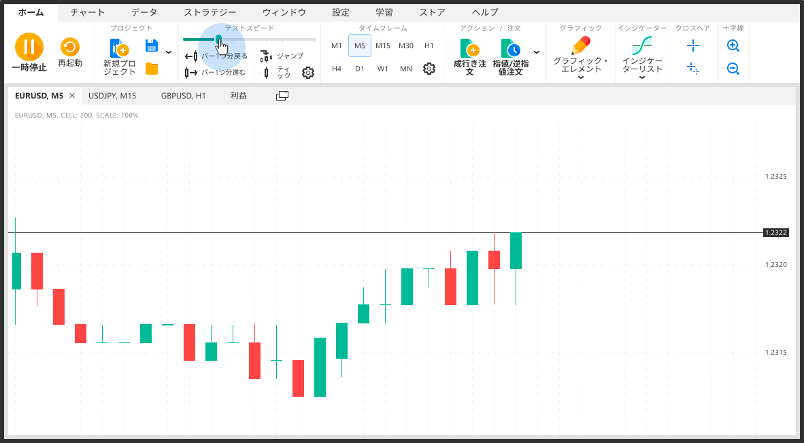
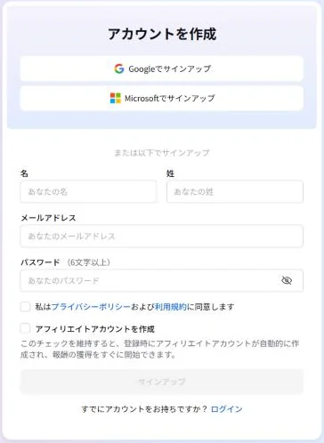
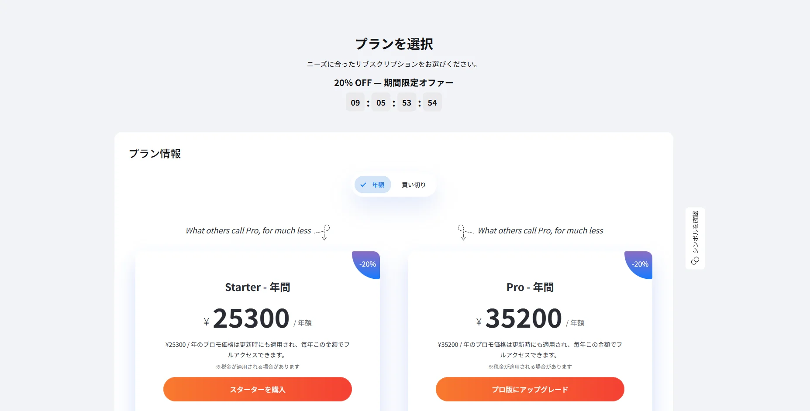
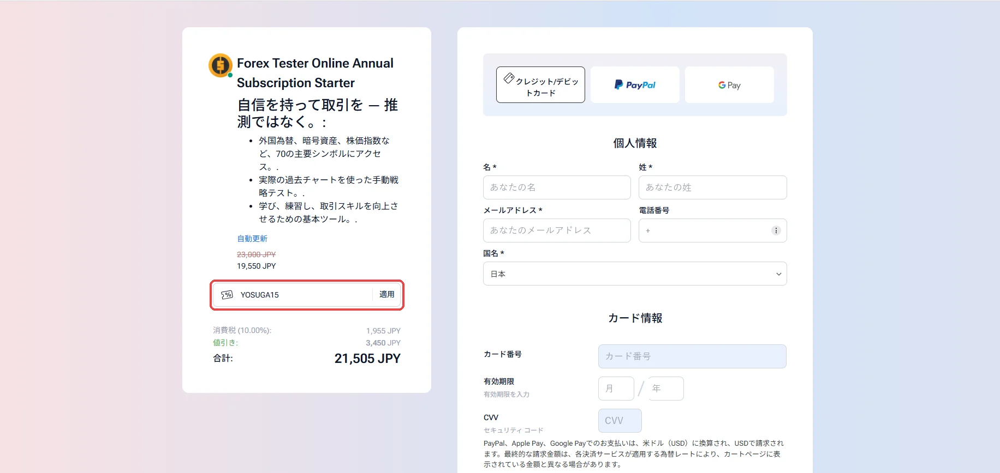
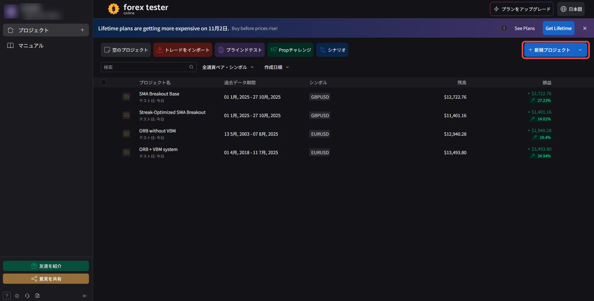
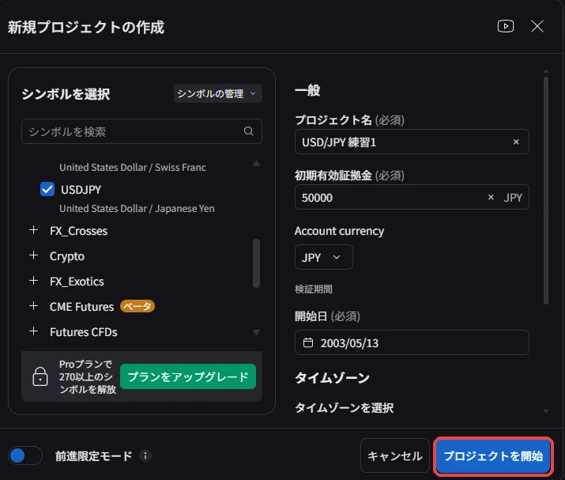
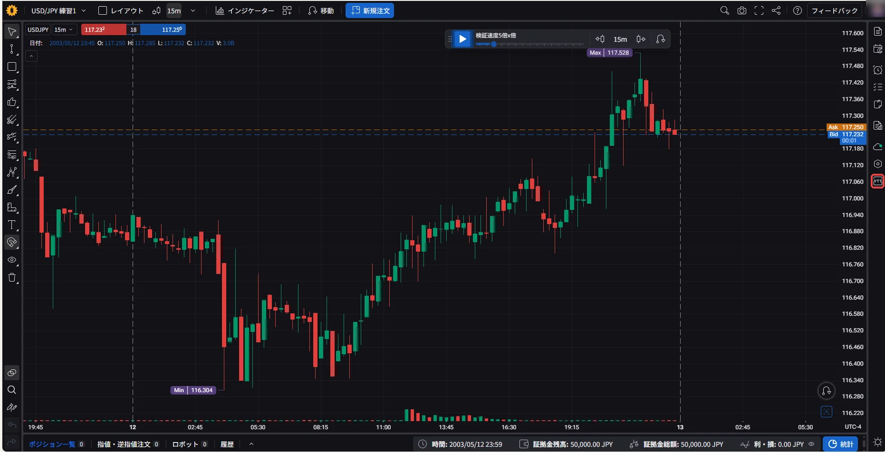
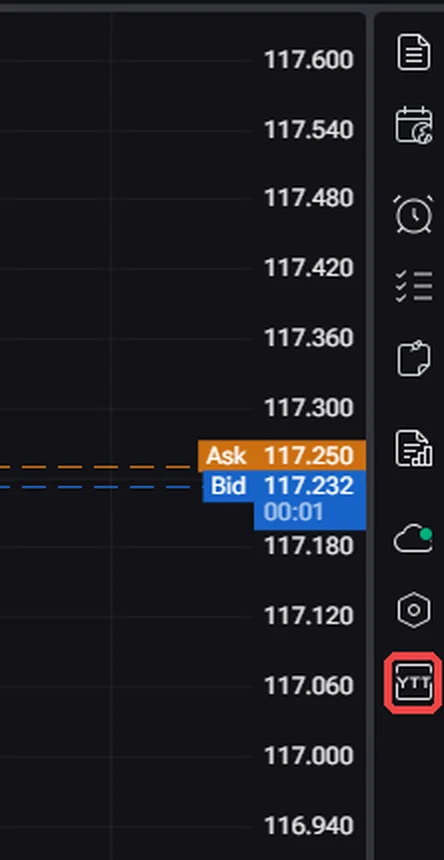
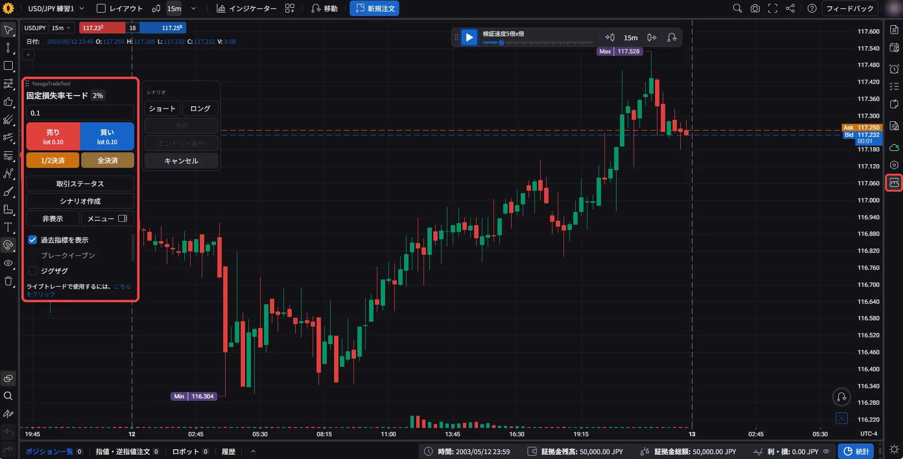

FTOでYTTが使えます

このページのボタンからFTOを開くと、画面の右側にYTTボタンが出ます。

FTO（フォレックステスターオンライン）とは
過去の実際のチャートを巻き戻して、トレードの練習と検証ができるツールです。ブラウザで動くので、iPad・Mac・Windowsのどれでも使えます。
このページのボタンからFTOを開くと、画面の右側にYTTボタンが出ます。

過去の実際のチャートを巻き戻して、トレードの練習と検証ができるツールです。ブラウザで動くので、iPad・Mac・Windowsのどれでも使えます。
 YTTを開くまで
YTTを開くまで


 STEP 1
STEP 1

Google・Microsoft・メールアドレスのどれかで登録する

メールアドレスで登録するときは、プライバシーポリシーと利用規約に同意にチェックを入れて「サインアップ」を押します。「アフィリエイトアカウントを作成」のチェックは外してかまいません。
「プランを選択」の画面で、StarterかProを選ぶ

YTTはStarterでも使えます。
クーポン欄に「YOSUGA15」と入れて「適用」を押し、支払い情報を入れて購入する

クーポンを入れると15%割引になります。入力が終わったら、下の「注文送信」を押します。
※クーポンは、終了していて使えないことがあります。
STEP 2
右上の「新規プロジェクト」を押す

通貨ペアを選び、プロジェクト名・初期有効証拠金・開始日を入れて「プロジェクトを開始」を押す

プロジェクト名は自分が見分けるための名前なので、「ドル円 練習1」など何でもかまいません。
STEP 3
プロジェクトを開き、画面の右側にある「YTT」ボタンを押す


右端に縦に並んだアイコンの、いちばん下にあります。
画面の左にYTTのパネルが開いたら完了

右側にYTTボタンが無いときは、このページのボタンからFTOを開き直してください。
よくある質問
このページのボタンからFTOを開いてログインすれば、YTTボタンが出ます。ファイルを入れたり、登録し直したりする必要はありません。
それぞれの端末で、一度このページのボタンからFTOを開いてください。